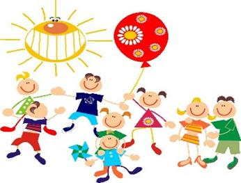

Программы очень веселые и интересные:
В гостях у сказки
Данная программа рассчитана на детей раннего возраста, у которых творческий потенциал раскрывается ярче всего, ибо пока еще сильна вера в чудеса. В нашем центре представлена групповая сказкотерапия, являющаяся одной из инновационных методик в области работы с детьми, позволяющая достичь эффективных результатов сразу в нескольких направлениях.
Занятия для детей 3-4 года/ Периодичность 1 раз в неделю / Продолжительность 45 мин.
| Разовое посещение | 500 рублей |
| Абонемент 5 посещений | 2000 рублей |
| Абонемент 10 посещений | 3500 рублей |
Самоделкин
На творческих занятиях по раннему развитию малыши делают поделки — лепят из пластилина, делают аппликации из бумаги, крупы, ваты и множества других материалов. Такие уроки не только развивают мелкую моторику, но и способствуют формированию творческого и абстрактного мышления, на них малыш фантазирует, выражает эмоции и общается со сверстниками.
Занятия для детей 3-7 лет/ Периодичность 2 раза в неделю / Продолжительность 45 мин.
| Разовое посещение | 400 рублей |
| Абонемент 5 посещений | 1900 рублей |
| Абонемент 10 посещений | 3600 рублей |
Веселые роботы
Конструирование научит ребенка конструктивно мыслить, мечтать, думать, творить. Конструктор в развитии ребенка играет немалую роль, он способствует развитию его мелкой моторики, и более того, является одним из самых простых и эффективных способов научиться договаривать с другими и делиться. Поэтому никак нельзя недооценивать пользу конструктора в развитии ребенка. Занятия проводятся в группах 3-4, 4-5 и 5-7 лет с учетом возраста, возможностей и особенностей каждого участника игрового занятия.
Занятия для детей 3-10 лет/ Периодичность 2 раза в неделю / Продолжительность 45 мин.
| Разовое посещение | 600 рублей |
| Абонемент 5 посещений | 2800 рублей |
| Абонемент 10 посещений | 5500 рублей |
Танцуют все
Современные занятия танцами для детей совмещают все, что нужно ребенку для гармоничного роста и развития, становления личности — в работу включаются и тело, и разум. Если вашему малышу не хватает движения и ярких положительных эмоций, приглашаем записаться на занятия прямо сейчас.
Занятия для детей от 3-х лет/ Периодичность 2 раза в неделю / Продолжительность 45 мин.
| Разовое посещение | 600 рублей |
| Абонемент 5 посещений | 2800 рублей |
| Абонемент 10 посещений | 5500 рублей |
Мини сад
Наш мини детский сад оформлен гармонично. В нем царят комфорт, уют, здоровый микроклимат и благоприятная располагающая атмосфера. Игрушки, пособия, мебель, оборудование абсолютно безопасны для здоровья, отвечают самым высоким стандартам. Все помещения оборудованы для детей. Каждое из них предназначено для проведения конкретного типа занятий. У нас есть все необходимое, чтобы интересно проводить обучение и активные занятия.
Занятия для детей от 2-х лет/ Периодичность 5 раз в неделю / Продолжительность 4 часа.
| Разовое посещение | 2000 рублей |
| Абонемент на 5 посещений | 9000 рублей |
| Абонемент на месяц | 40000 рублей |